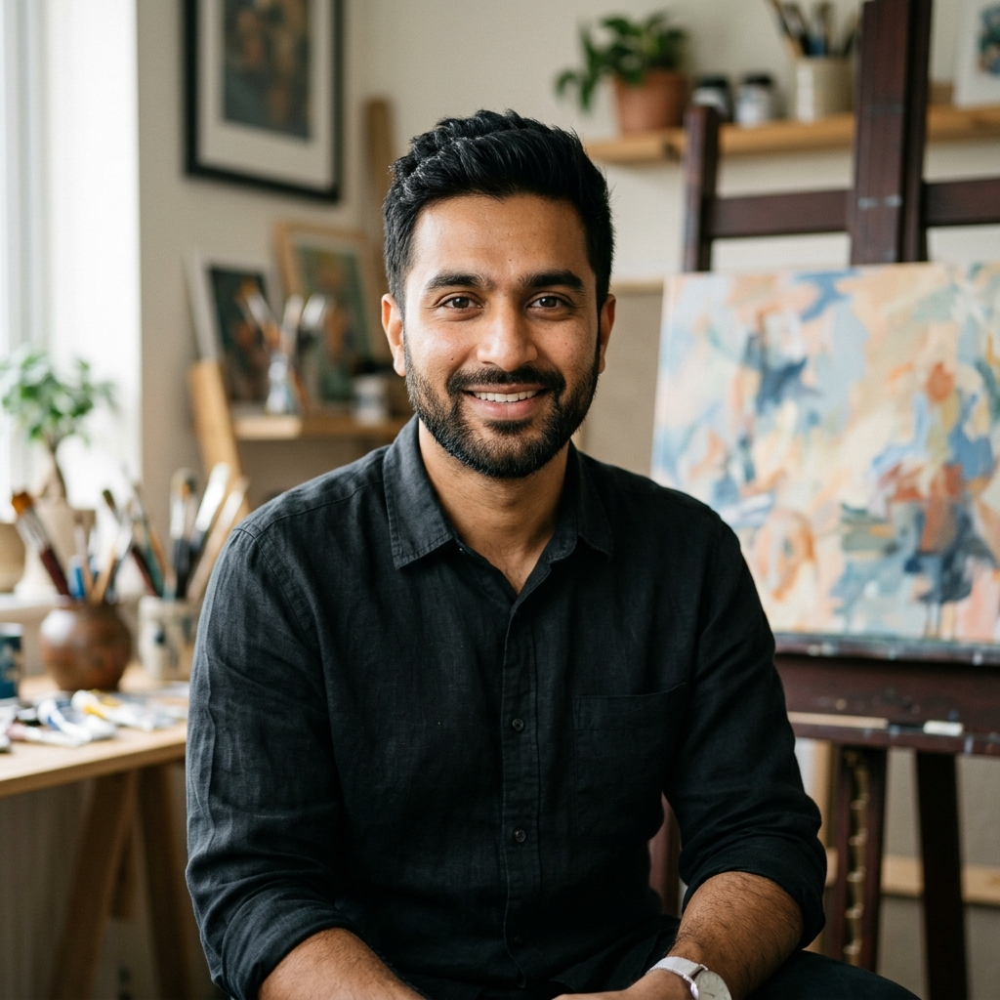
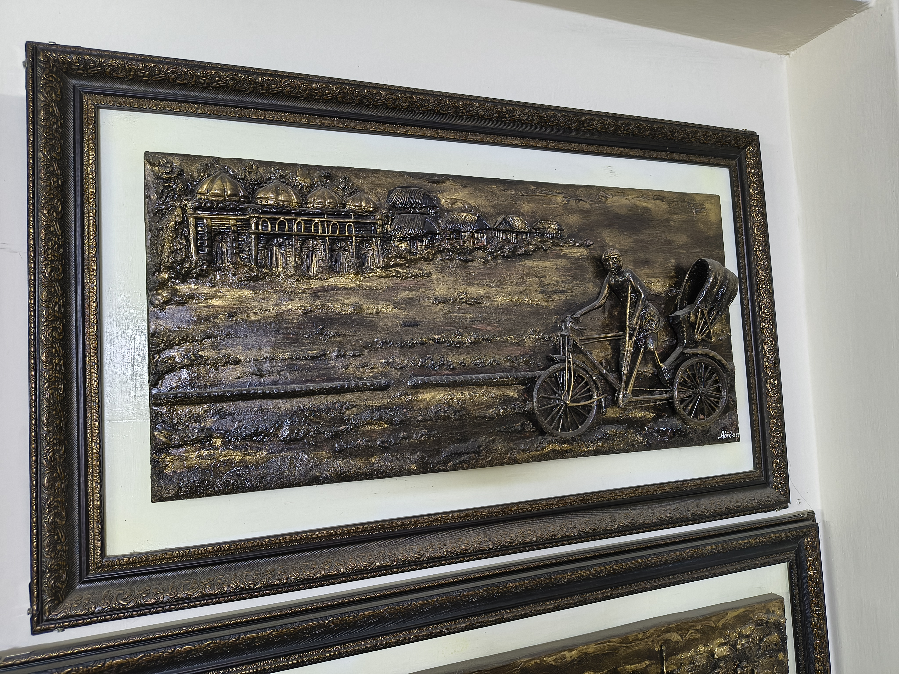
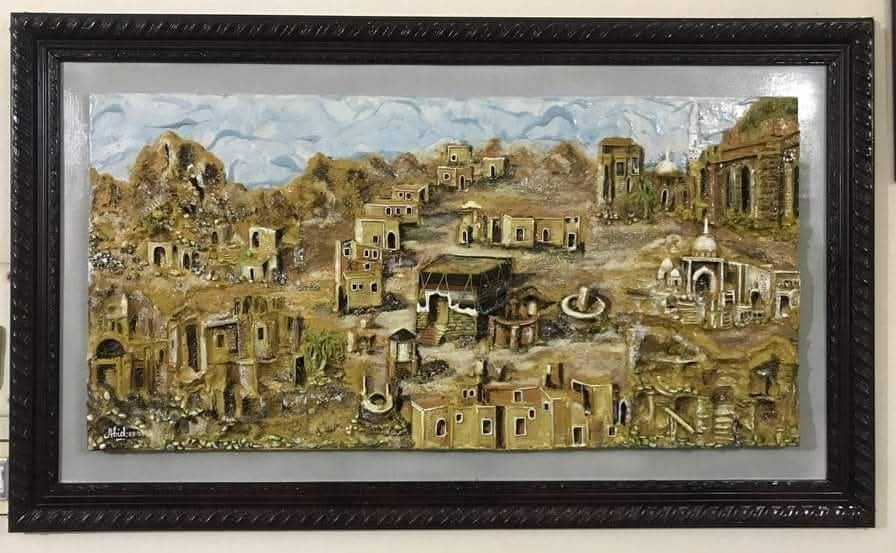
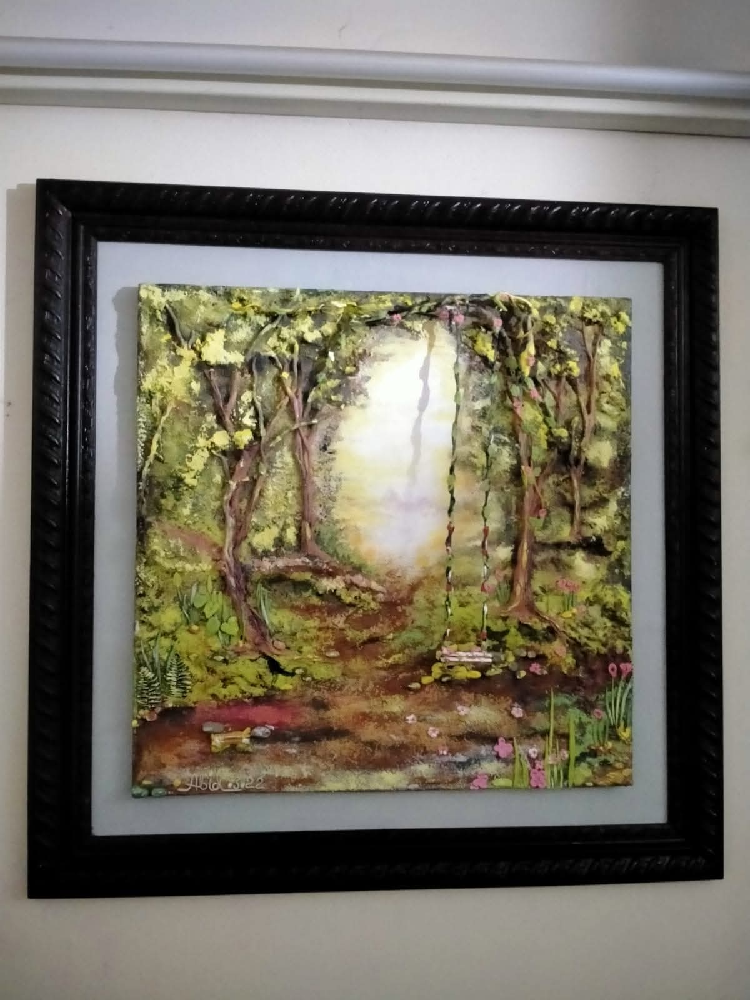
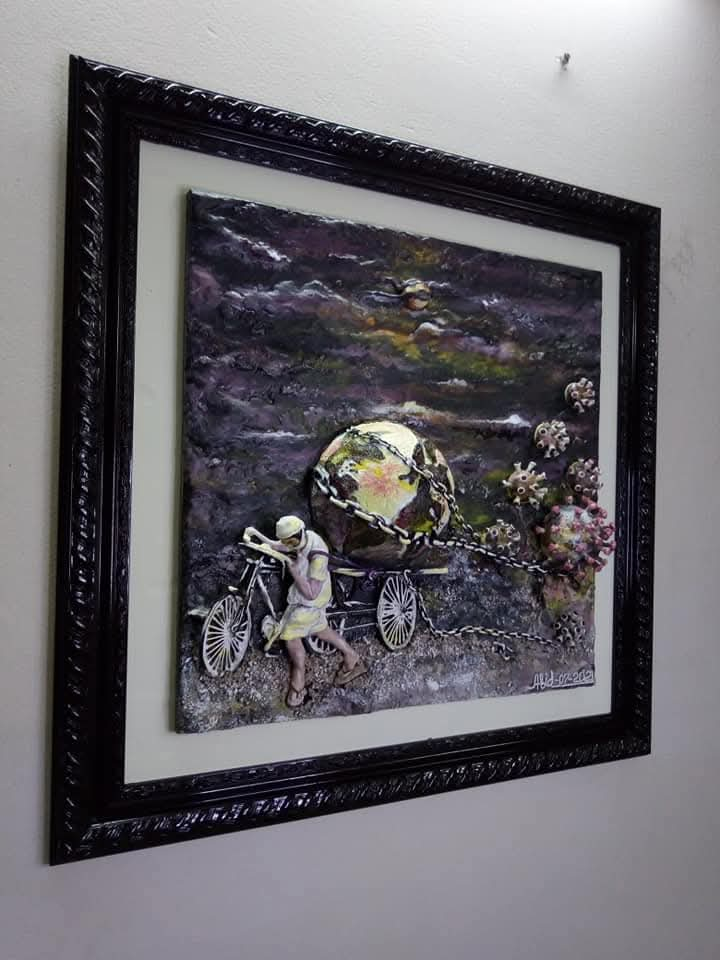
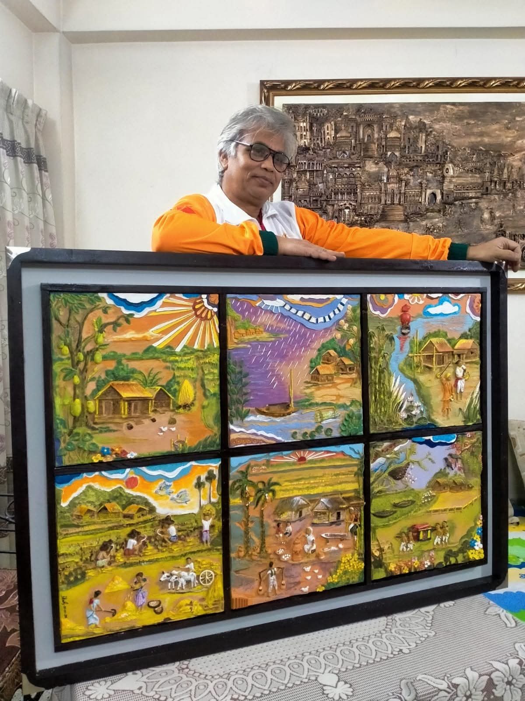
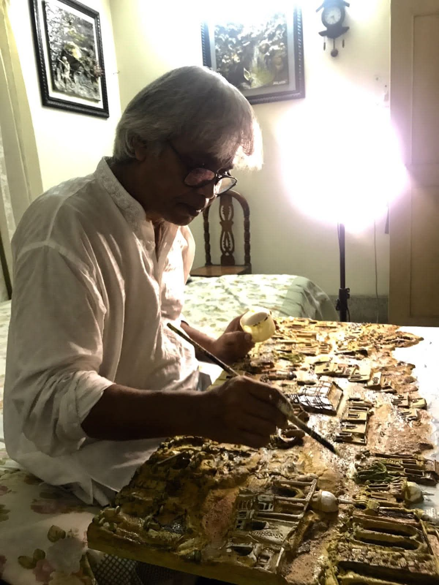
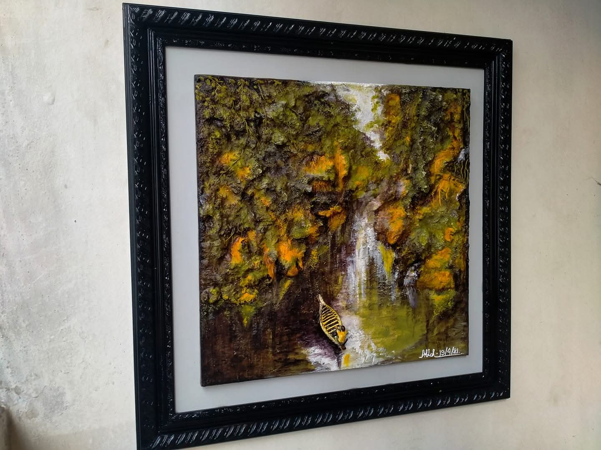
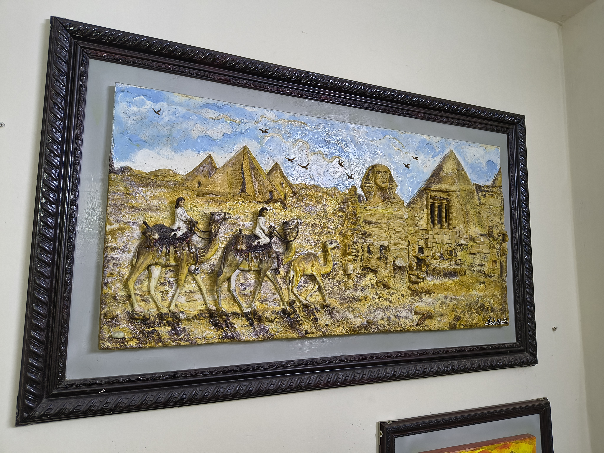

|
Abid Hossain
abid.hussain.art [AT] gmail [DOT] com • Dhaka, Bangladesh
I am a 3D Landscape Artist & Sculptural Relief Painter based in Dhaka, Bangladesh. With over a decade of dedicated studio exploration, I specialize in tactile multi-dimensional landscape painting, sculpted impasto mountainscapes, and atmospheric fine art that capture the serenity, texture, and organic drama of nature.
My creative process bridges traditional fine art techniques and contemporary 3D sculptural reliefs, utilizing heavy-body acrylic mediums, marble dust stucco paste, and layered natural pigments on canvas and wood panels. With over 50 completed private and commercial commissions across Asia and internationally, my mission is to transform flat surfaces into living, breathing spatial landscapes that invite touch, contemplation, and emotion.
Artworks /
Experience /
Skills /
Exhibitions /
Education /
Contact
|

|
|
Education
|
B.F.A. in Painting & Visual Arts — 2018
Faculty of Fine Art, University of Dhaka (Charukala), Bangladesh
|
|
Work Experience
|
Lead 3D Landscape Artist & Studio Founder | Abid Hossain Fine Art Studio, Dhaka, Bangladesh
January 2018 – Present
- Conceptualize and sculpt bespoke 3D textured acrylic landscapes, large-scale multi-dimensional wall reliefs, and atmospheric horizon paintings.
- Specialize in impasto mountain ridges, textured cloudscapes, river reflections, and deep woodland foliage using proprietary texture pastes and heavy acrylics.
- Completed over 50 custom commissions for private collectors, boutique architectural spaces, and high-end residential interiors with 100% satisfaction.
Curatorial Associate & Art Consultant | Dhaka Contemporary Fine Arts Network
March 2016 – December 2018
- Curated thematic group exhibitions and oversaw artwork cataloging, lighting setup, and archival framing.
- Advised art patrons and interior architects on spatial artwork integration, color harmonization, and lighting angles for relief textures.
Visual Arts Instructor & Workshop Lead | Studio Crafts & Palette Academy, Dhaka
January 2014 – February 2016
- Mentored over 120 students in palette-knife sculpting, texture mediums, color gradients, and compositional balance.
- Conducted hands-on demonstrations of heavy-body acrylic impasto techniques and protective archival varnishing.
|
|
Technical & Artistic Skills
|
| Artistic Mediums: |
3D Textured Acrylics, Heavy-Body Impasto, Marble Dust Stucco, Mixed-Media Relief, Oil & Resin Glazes |
| Core Themes & Subjects: |
Mountain Ranges, Twilight & Sunrise Skies, Riverine Vistas, Verdant Forests, Celestial Nightscapes, Abstract Landscapes |
| Sculpting & Texturing: |
Palette Knife Sculpting, High-Relief Modeling, Multi-layer Glazing, Sgraffito, Texture Pastes, Gesso Priming, Archival Varnishing |
| Digital & Design Tools: |
Blender 3D, Adobe Photoshop, Procreate, Digital Mockups, Spatial Art Visualization |
| Professional Services: |
Bespoke Commission Painting, Spatial Curation, Art Consultation, Restoration & Framing, Private Art Masterclasses |
|
Selected Artworks & Projects
|
|

|
Mountain Peak Reverie (3D Relief Landscape): Heavy impasto textural landscape depicting rugged Himalayan ridges with layered marble dust paste, cobalt shadows, and warm gold sunrise glazes.
(3D Textured Acrylic on Canvas, 36" × 48")
[View High-Res Art]
[Inquire Commission]
|
|

|
Riverbank Twilight Serenade: Multi-layered water vistas featuring gentle river ripples and atmospheric twilight reflections sculpted with translucent acrylic glazes and dimensional banks.
(Mixed-Media Relief on Wood Panel, 30" × 40")
[View High-Res Art]
[Inquire Commission]
|
|

|
Golden Horizon Sunset: Warm amber, terracotta, and crimson sunset gradients capturing the atmospheric glow over rolling delta horizons with sculpted cloud formations.
(Acrylic & Sculpting Medium on Canvas, 24" × 36")
[View High-Res Art]
[Inquire Commission]
|
|

|
Verdant Woodland Sanctuary: Tactile forest canopy rendered with deep emerald greens, raw umber bark reliefs, and textured moss layers that react dynamically to ambient lighting.
(3D Textured Canvas, 30" × 30")
[View High-Res Art]
[Inquire Commission]
|
|

|
Chromatic Dimensions & Abstract Form: Intersecting geometric waves and organic texture peaks created through knife carving, plaster layering, and subtle metallic undertones.
(Sculptural Stucco & Mixed Media, 32" × 32")
[View High-Res Art]
[Inquire Commission]
|
|

|
Alpine Solitude in Winter: Snow-capped crystalline crags sculpted with heavy stucco paste, titanium white peaks, and deep ultramarine crevasse shadows.
(Impasto on Heavy Canvas, 40" × 50")
[View High-Res Art]
[Inquire Commission]
|
|

|
Celestial Starry Nightscape: Swirling midnight blue galaxies, starry constellations, and glowing lunar textures sculpted with dimensional paste and iridescent mineral highlights.
(Textured Acrylic on Canvas, 36" × 36")
[View High-Res Art]
[Inquire Commission]
|
|

|
Terra & Geological Strata: Tactile exploration of natural stone formations and soil textures created with fine silica sand, raw pigment washes, and sculpted structural paste.
(Textural Mixed Media on Wood Panel, 24" × 24")
[View High-Res Art]
[Inquire Commission]
|
|
Selected Exhibitions & Honors
|
|
[1] Echoes of Nature: 3D Relief Landscapes — Solo Exhibition
Abid Hossain
National Art Gallery, Bangladesh Shilpakala Academy, Dhaka, 2024
🏆 BEST CONTEMPORARY SCULPTURAL ARTWORK AWARD
[Catalog Details] | [Press Coverage]
A solo exhibition showcasing 28 tactile multi-dimensional landscape paintings investigating how ambient lighting creates organic shifts in depth, shadows, and mood throughout the day.
[2] Asian Landscape Art Biennale
Abid Hossain (Invited Resident Artist)
International Contemporary Art Pavilion, Singapore, 2023
🏅 SILVER DISTINCTION IN VISUAL FINE ARTS
Honored for innovative palette-knife texturing techniques and high-relief atmospheric landscape storytelling across Asian art circles.
[3] Terra & Sky: Dimensions of the Delta — Juried National Exhibition
Abid Hossain
Bengal Foundation Art Gallery, Dhaka, 2022
Curated 8-piece series on riverine textures and twilight horizons celebrating the timeless landscape of rural Bangladesh.
[4] Emerging Fine Artist of the Year Award
Abid Hossain
Bangladesh Visual Arts Guild Annual Honors, 2020
Awarded for outstanding contribution to modern dimensional landscape painting and community arts education.
|
|
Certifications & Masterclasses
|
Masterclass in Advanced Palette Knife & Impasto Sculpting — 2021 | Royal Academy of Fine Arts (Online)
Archival Fine Art Conservation & Mixed-Media Preservation — 2019 | International Fine Art Guild
Digital 3D Visualization & Spatial Art Modeling — 2018 | Creative Media Arts
|
|
Volunteer & Community Engagement
|
Community Fine Art Mentor | Dhaka Children's Art Foundation
January 2019 – Present
Conducted weekly non-profit painting workshops for underprivileged youth, fostering visual literacy, drawing foundations, and creative self-expression.
Visual Arts Coordinator | National Youth Art Festival, Dhaka
2017 – 2020
Coordinated exhibition layout and conducted interactive tactile art demonstrations for over 500 student artists.
|
|